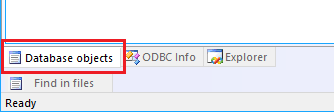
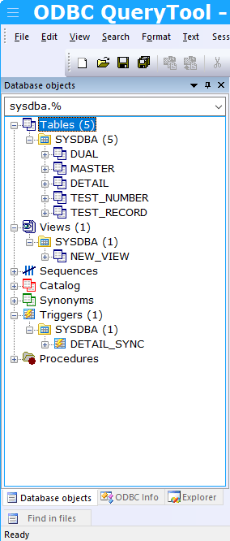
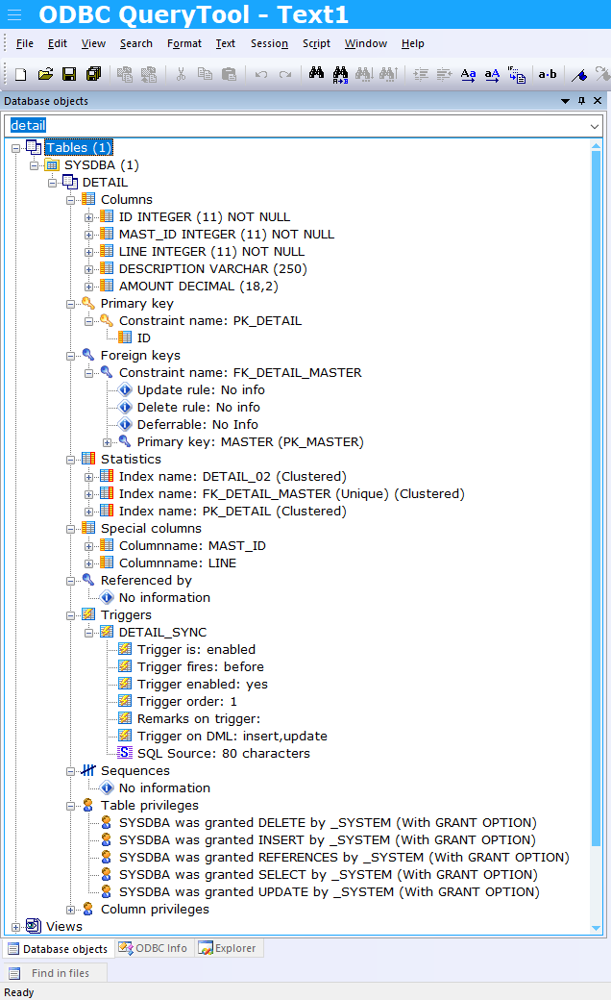

OK, You're sitting in front of your querytool and you want to retrieve information from your database. But what was the name of that column in the database you lastly used. And what was the exact spelling of the tablename. Luckely you can find out with this querytool. So here we go:
Select the object pane on the left side of the querytool. If you do not see it, try to use the 'view' menu and check the 'File panel' option.

You can now add (a part) of a table name. If you do not remember the full name of the table, you can try adding the SQL '%' wildcard to the part you do remember.
Here i entered "model%" as a search criterium. To start searching: press the TAB key!
The result will be that we get a list of found tablenames:

Please be aware that we also can search on any level of the schema model. So the following are all valid search expressions:
- TABLE:%
- TABLE:dbo.model%
- VIEW:dbo.%
- dbo.mo%
Now that we have our list, we can fill in the name of one of the tables.

You can now see the columns and their datatypes, column sizes and (not) null status.
We are also aware that there are other categories (keys, statstics, references etc) that we can explore.
Open the nodes for primary / foreign / statiscs = indices etc. As you can see, all the information is there:
